Smart SMS & Email Manager (SSEM), a multi-user SaaS application that manages your SMS & Email in a smarter way. You can manage your contacts, create SMS/Email template, send SMS/Email, schedule when to send SMS/Email, wish your contacts' birthday etc.
SSEM has built-in support for world's most popular SMS & Email gateways like Plivo, Twilio, Clickatell, Nexmo, Mandrill, Sendgrid, Mailgun etc.
It’s a multi-user SaaS application and designed in a way so that each user can have independent environment. Users will have their own SMS/Email gateways and will manage their own SMS/Email as well as bills .
Key Features
Dashboard (graphical report of recent activities)
Settings (system customization & configuration)
User management (User Types : admin, user)
SaaS pack : PayPal payment and auto reminder system
Contact management (multi-grouped)
Most popular SMS/Email gateway support (Plivo, Twilio, Clickatell, Nexmo, Mandrill, Sendgrid, Mailgun and so on)
SMS/Email template management
Schedule/Instant SMS/Email Sending to all Contacts with a Single Click
Birthday wish SMS/Email
Report
SSEM native APIs: a) Contact Sync b) Send SMS c) Send Email
Multilingual Support (built-in support for 11 languages)
Make sure curl is enbaled , mbstring is enabled, set_time_out is enabled , safe_mode is off, open_base_dir has no value, allow_url_fopen=1 and mysqli support is on.
[Note: If you get "404 page not found" error then make AllowOverride in your virual host and check if .htaccess file is uploaded successfully in root or not]
Installation Manual :
Download .zip package
Upload it to your server
Extract the package
Make sure all files and folder have write permission after you extract because this software have auto update feature and system may need to change or replace any project file during auto update process. If you do not want to use auto update feature then make sure atleast application/install.txt, application/config (folder and child files), application/core (folder and child files), download, upload files have write permission.
Run the uploaded url via browser (http://yourdomain.com/projectFolder/) and you will find a interface to provide the settings :
Now add-on has been uploaded and all you need to do is to activate the add-on. Click on the Activate button and activate with your purchase code.
Hostname : database host name / IP (usually localhost)
Database Name : create a mysql database on your host and write that name here
Database username : username of the created database
Database password : password of the created database
Admin Panel Login Email: this will be used to login as admin
Admin Panel Login Password : password to log in as admin
Company Name and Company Address
Company Phone / Mobile
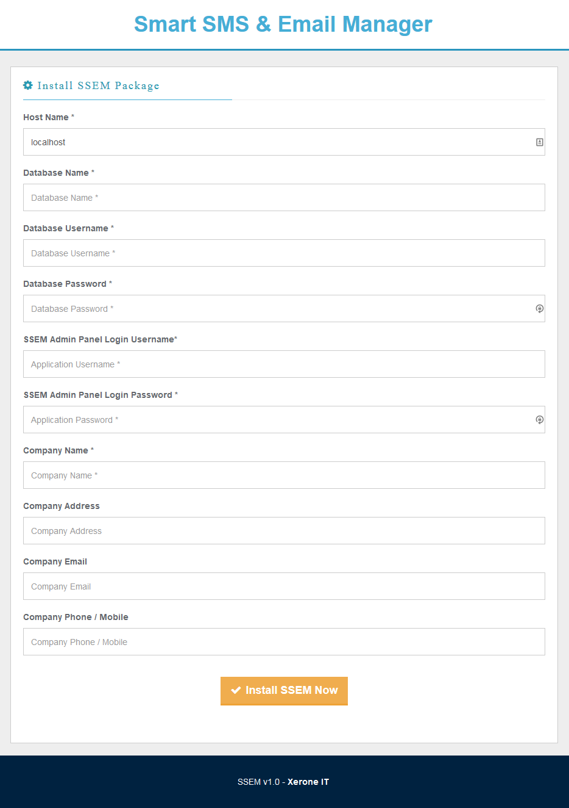
Click Install SSEM Now Button
You are done. Log in with your admin username and password and start using SSEM
Dashboard is the landing page, consisting of graphical representation of recent activities. There are two types of dashboards, one for admins and another for other users.
Admin Dashboard : Admin Dashboard consists of recent activities of all users
My Dashboard : My Dashboard consists of recent activities of his/her only.
This panel is only for admin users. As an admin user, you will find everything to control your application here.
Settings > General Settings [Only Admin]
Brand Settings: This is the place where you can change company information, aplication details , contact etc. Choose default language,timezone,backend color skin here.There is a settings for focing https to make all urls https.
Logo & Favicon Settings: Set app logo and favicon. This logo & favicon will affect all over the project. Sometime it may need to clear browser cache to make the changes to affect.
SMS Sending Settings: There are two config variables to overcome the issue of time out for bulk SMS sending. The config variables "Number of SMS Send per Cron Job" means the number of SMS will be send when a cron job runs. Suppose it is set to 10 and your campaign have 100 contacts, so the campaign will be complete after 10 cron jobs run and it will avoid time out issue. Adjust the config as per your server performance. Here 0 means no limit. The another variable "SMS Sending Report Update Frequency" means after how many SMS sending the campaign report will be updated. It is 10 by default. Setting it to lower value will increase the database load but very useful for time out issue as this updated information will be used in next cron job. System will start sending next time where it left the camapign earlier. If your server has timeout issue then you can reduce "SMS Sending Report Update Frequency" to 5. But always keep the "Number of SMS Send per Cron Job" higher than "SMS Sending Report Update Frequency"
Email Sending Settings: There are two config variables to overcome the issue of time out for bulk Email sending. The config variables "Number of Email Send per Cron Job" means the number of SMS will be send when a cron job runs. Suppose it is set to 10 and your campaign have 100 contacts, so the campaign will be complete after 10 cron jobs run and it will avoid time out issue. Adjust the config as per your server performance. Here 0 means no limit. The another variable "SMS Sending Report Update Frequency" means after how many SMS sending the campaign report will be updated. It is 10 by default. Setting it to lower value will increase the database load but very useful for time out issue as this updated information will be used in next cron job. System will start sending next time where it left the camapign earlier. If your server has timeout issue then you can reduce "SMS Sending Report Update Frequency" to 5. But always keep the "Number of SMS Send per Cron Job" higher than "SMS Sending Report Update Frequency"
SMS/Email API Access Setting: This section is for giving access of SMS/Email API to users. If accesses are enable from general settings, then user can use admin's SMS/Email API to send SMS/Email campaigns.
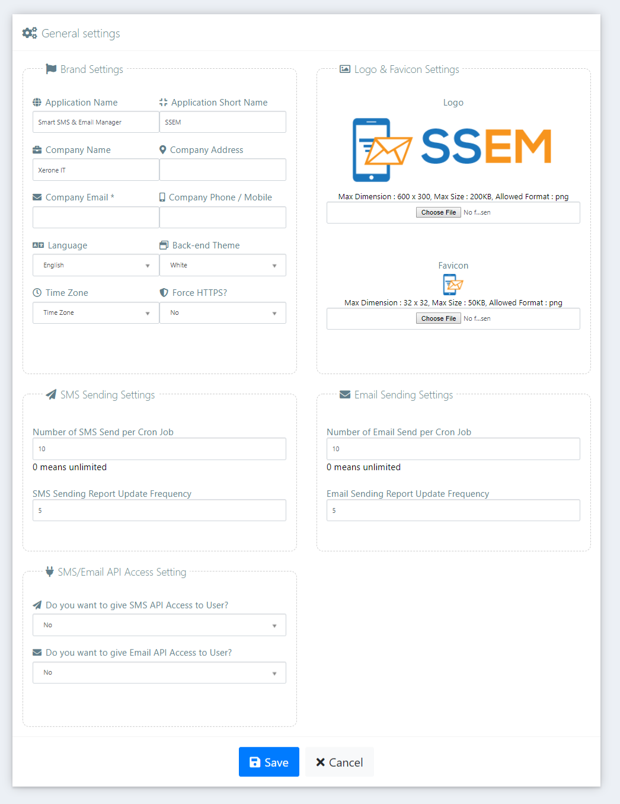
Settings > Front-end Settings [Only Admin]
This awesome software also now have an bulit-in eye-catching landing page which is fully dynamic and can be controlled from this settings area.
You can choose if you want landing page or not. If you select Display Landing Page as No then login page will be the default page.
If you do not want social links to show up then keep the social links blank.
If you choose Display Review Block as No then customer review section will be hidden from landing page. Put youtube watch url if you want to show a review video, keep it blank if you do not want it, it will be hidden then.
If you want to add promo video of the application then you can add promo video from here. If you don't want this just keep it blank.
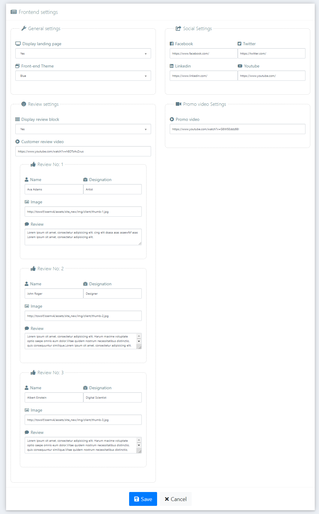
Promo Section :
Review Section:
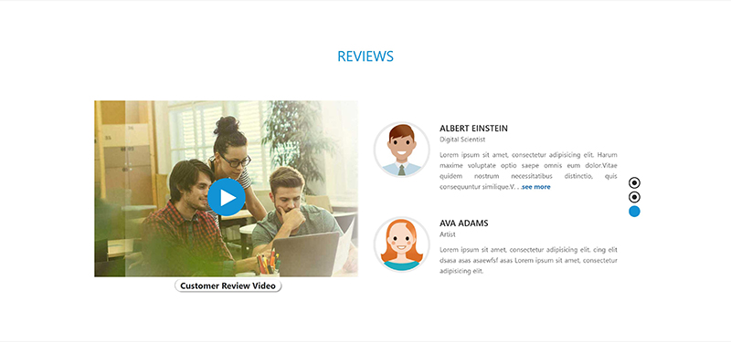
Social Section:
Settings > Email Settings (System SMTP Email: Only Admin)
This is the place to configure system email.
You can add any SMTP email provider here. There are three stmp types : Default, TLS and SSL. Default option is for non-SSL smtp. You will find your smtp configuration in your cpanel.
These settings will be used to send system emails like forget password, contact, send notification etc.
It is a muti-user application with the SaaS (Software as a Service) functionality.
It consists of two types of user : admin level & user level (end user)
These settings will be used to send system emails like forget password, contact, send notification etc.
Both will have similar features except only admin users will have access to "Settings","User Management" menu.
Admin will configure the system through general settings, email settings, payment settings etc while end users will use the system & will pay monthly service charge for using the system. It has feature to recieve payment via PayPal will be discussed later in this documentation.
In user management admin users will have access to add, view, disable, enable, edit, reset password, delete users.
From user management admin can also export all users details.
Note: if you add an user manually, then after addition edit the user to assign expiry date manually.
Note: Deleting an user will delete all it's related data from everywhere of database.
Payment -> Dashboard : This is place where you can see your collection report graphically.
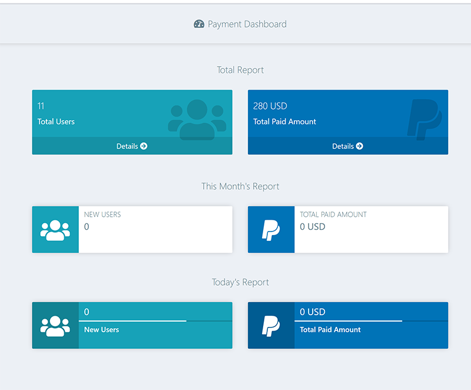
Payment -> Payment Setting : This is the place where you set your PayPal account / Stripe account or both and your currency. Your end users will pay to this PayPal account/ Stripe account.
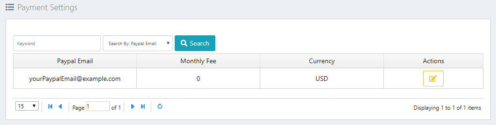
Payment > Payment History [Admin will have all and users will have own report] : History of all payment made by end users. You can search be name or payment date.
Contact Group : This is place where you can create contact groups like Friends, Family, Office etc. Contacts can be saved in groups. You can assign a contact to multiple groups also.
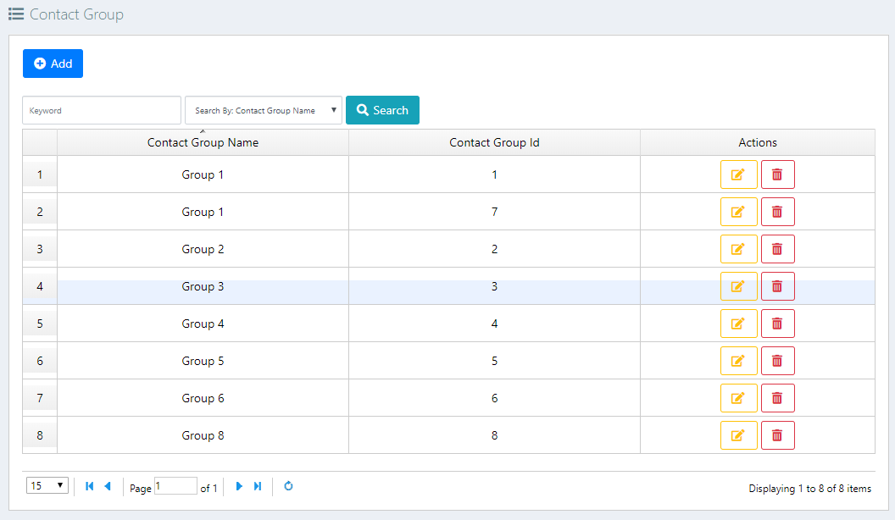
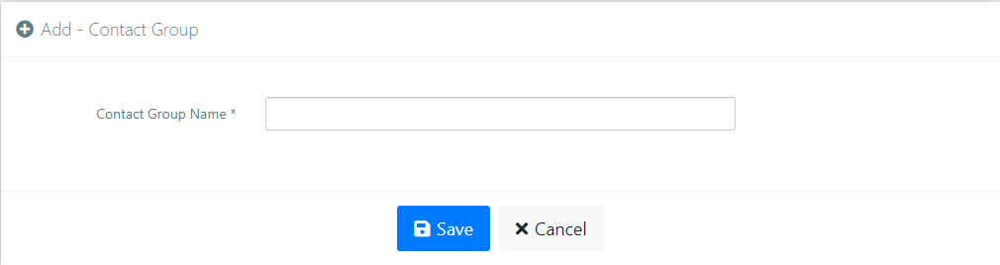
Contact : Here you can add your contact with their details and assign them to contact groups which you have created in Contact Group menu. You can assign an user to multiple groups. You can also import/export contacts from here.
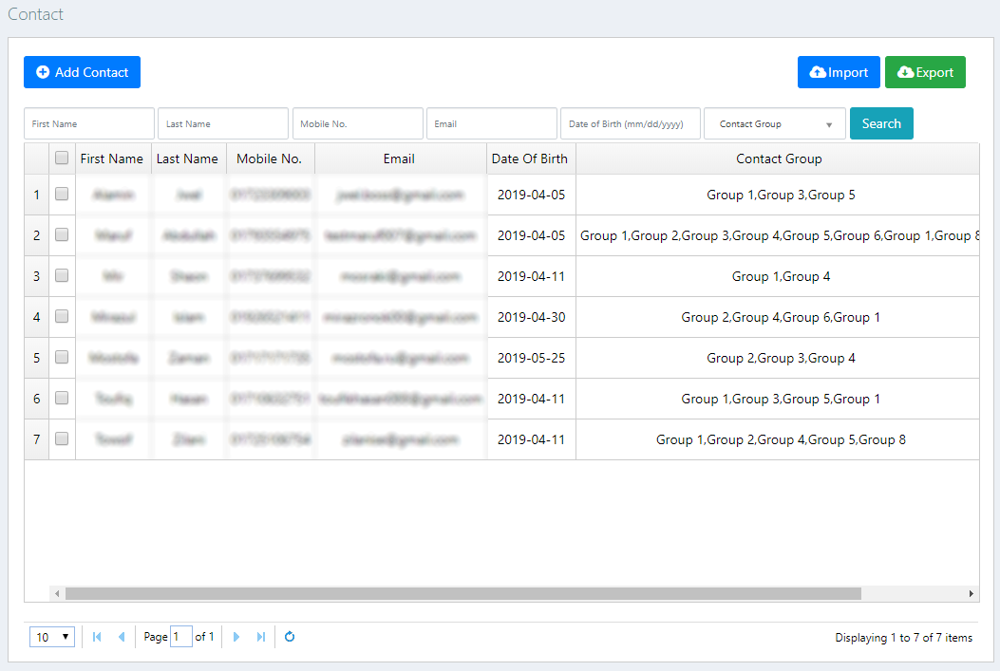
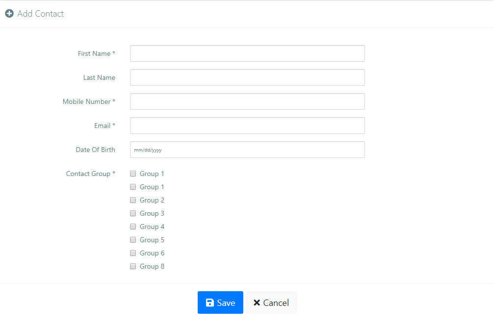
Import Contact : You can import CSV file of your contacts and have to assign them into contact group. You can also download sample CSV file to get idea about the foramt of the CSV file.
To Send SMS, you have to set your SMS API. SSEM has the built-in support for most popular SMS gateway such as Planet IT, plivo,Twilio, Clickatell, Nexmo, msg91.com, textlocal.in, sms4connect.com, telnor.com, mvaayoo.com, routesms.com, trio-mobile.com, sms40.com, africastalking.com
All you have to do is to chose a gateway, buy SMS from them and configure SSEM with provided API information from the gateway.
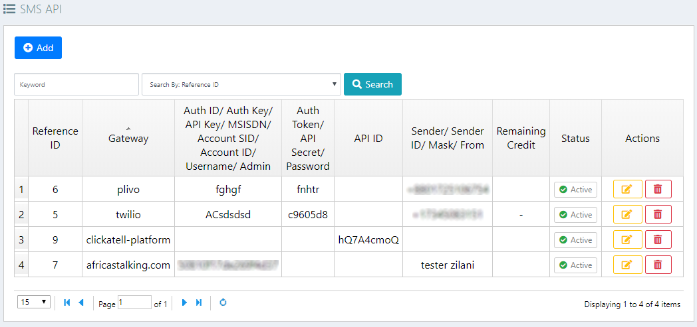
You can get idea about what information is needed for your selected SMS API by click on Instruction to Configure SMS API button
SSEM provide you to create SMS Templates so that you do not have to write SMS content when you send or schedule SMS.You can use variables like #FIRST_NAME#, #LAST_NAME#, #MOBILE# and #EMAIL_ADDRESS# to replace them with contacts' first name, last name, mobile number and email respectivlely.
This is the section where you can create your bulk/schedule SMS campaigns to send your contacts number if your SMS API configuration has already done. You can create instant/schedule SMS Campaign from here. You can also see the all of your campaigns details which is pending/processing/completed. See reports of all pending,processing and completed campaigns. There are three controlling options : pause , play and force-process. Pausing campaign will stop sending sending message and playing again will restart sending again. If you think campaign has been stoped for some system failure like timeout then you can force-process the campaign to resume it again.
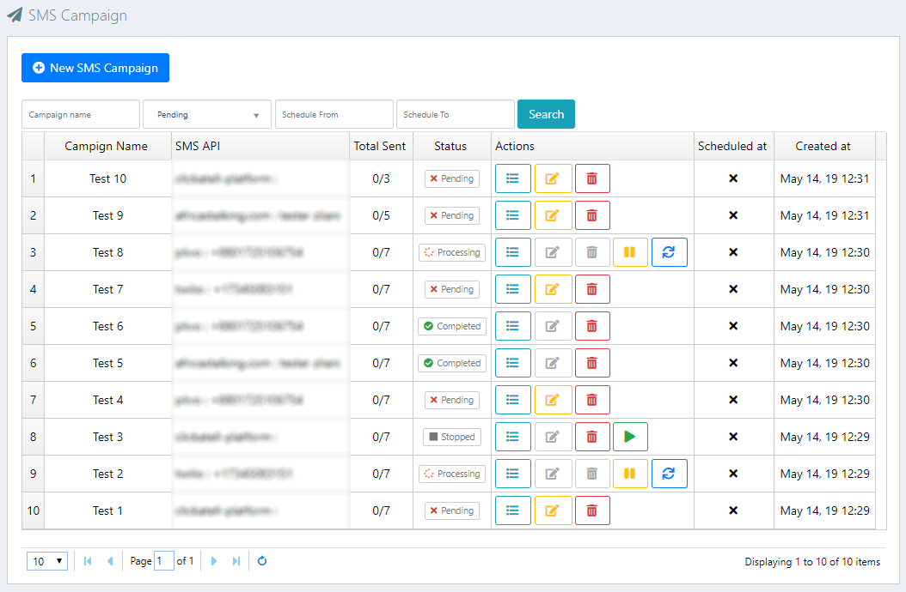
New SMS Campaign :
To Add new SMS camapaign click on New SMS Campaign button to get started. You will see the camapaign creation form.
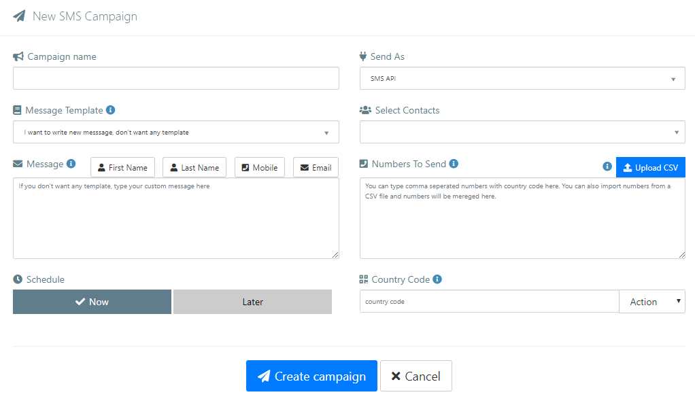
Campaign Name : You have give a campaign name.
Send As: You have to select a SMS API to send Messages. You will see the dropdown of your confugured SMS APIs.
Message Template : You can choose your created SMS message template from the dropdown. You will see the list of your added message templates from SMS Template menu. Here you can write your own message instead of using Message templates.
Select Contacts : You have to select your contact group to send SMS. You can select multiple groups. Beside selecting contact groups, you can also provide manual phone number in Numbers To Send field. System will send message to both your contact groups and your manual phone numbers.
Country Code : This Section is optional. Some of If you want to Add/Remove country code to you contacts, you simply put your country code here and select an action from the right sided dropdown menu. It will Add/Remove country code from your contact number.
Schedule : If you want to send SMS instant, you can keep it Now. Or if you want to create a scheduled campaign, you have to select Later. You will see the Time and Time Zone section which are required for Scheduled campaigns.
Edit SMS Campaign : You can edit your campaigns by click on Edit Icon. Keep in mind that only Pending campaigns are editable.
See SMS Campaign Report :
Click the "Report" button to see delivery status of your message. Report will display status of message delivery for each contact.
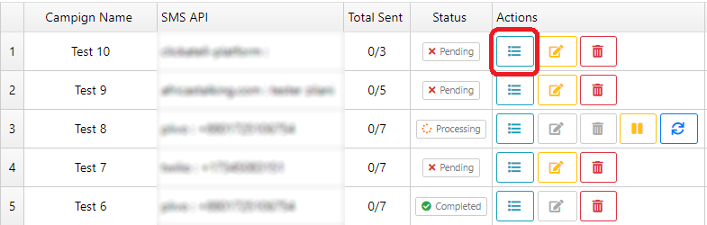
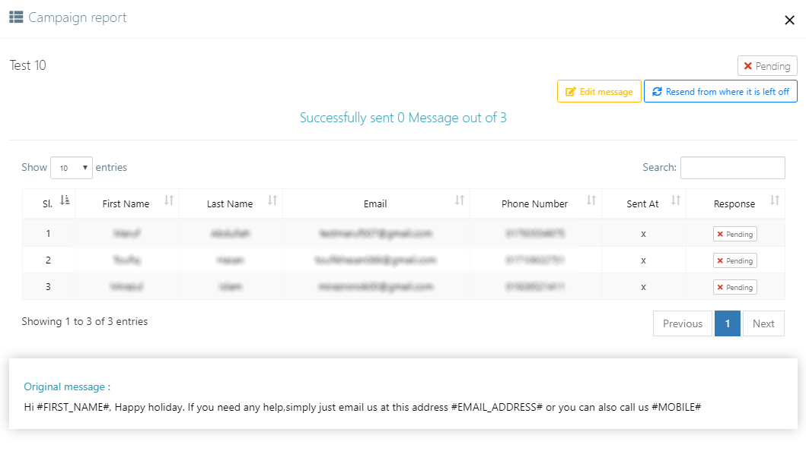
Here you can see the sending time and status response of each contact of the campaign. You can edit only your original Message from here. If the campaign has been completed without sending to all and you think you can proceed the campaign & there is less possibilty to get error response, you will see a button Resend from where it is left off to resume sending where it is left off before completion of campaign.
This Section Contains your entire SMS campaign Sending history. You can see the actual delivery status of each contacts here. You can also search SMS of a specific date interval.
SSEM Supports Email gateway to send Emails like <Mandrill,Sendgrid and Mailgun gateway. All you have to do is to chose a gateway, buy Email from them and configure SSEM with provided API information from the gateway like Email ID, API Key etc. If you do not want paid email services then you can configure SSEM with your own SMTP or 3rd Party SMTP server for sending SMTP emails.
SMTP : If you do not want paid email services then you can configure SSEM with your own SMTP or 3rd Party SMTP server for sending SMTP emails. 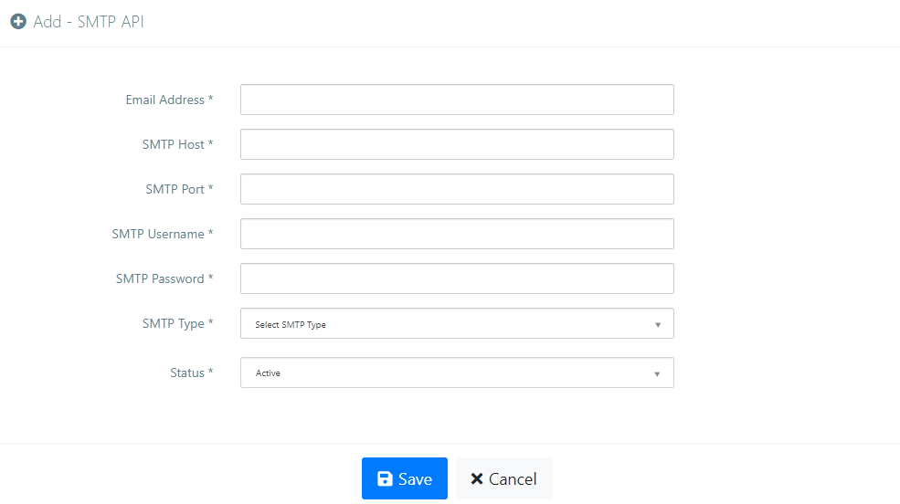
Mandrill : You can Add your Mandrill Email API which is needed information like below image. 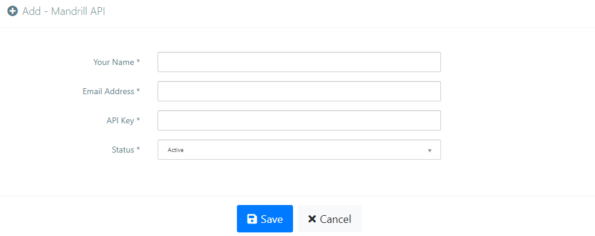
Sendgrid : You can Add your Sendgrib Email API which is needed information like below image. 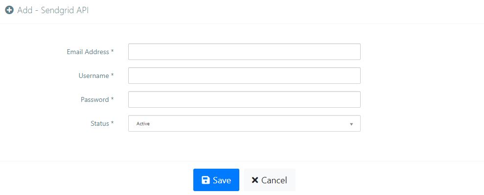
Mailgun : You can Add your Mailgun Email API which is needed information like below image.
SSEM provide you to create Email Templates so that you do not have to write Email content when you send or schedule SMS.You can use variables by click on Varible button of the text editor like #FIRST_NAME#, #LAST_NAME#, #MOBILE# and #EMAIL_ADDRESS# to replace them with contacts' first name, last name, mobile number and email respectivlely. If you also want to send unsubscription link through email, you can also choose Unsubscribe Button from the dropdown. It will use variable like #UNSUBSCRIBE_LINK# and system will send a link to your contact email to unsubscribe from your mailing sevice.
This is the section where you can create your bulk/schedule Email campaigns to send your contacts email addresses if your Email API configuration has already done. You can create instant/schedule Email Campaign from here. You can also see the all of your campaigns details which is pending/processing/completed. See reports of all pending,processing and completed campaigns. There are three controlling options : pause , play and force-process. Pausing campaign will stop sending email and playing again will restart sending again. If you think campaign has been stoped for some system failure like timeout then you can force-process the campaign to resume it again.
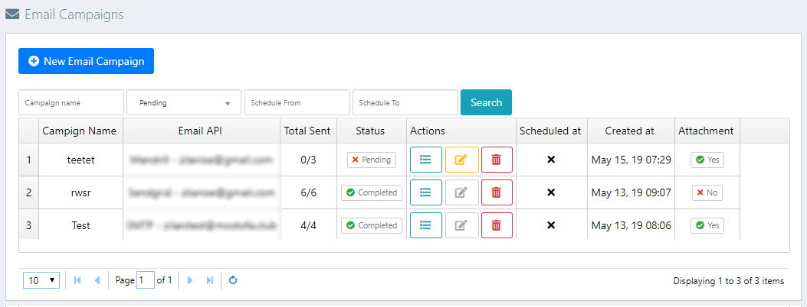
New Email Campaign :
To Add new SMS camapaign click on New Email Campaign button to get started. You will see the camapaign creation form.
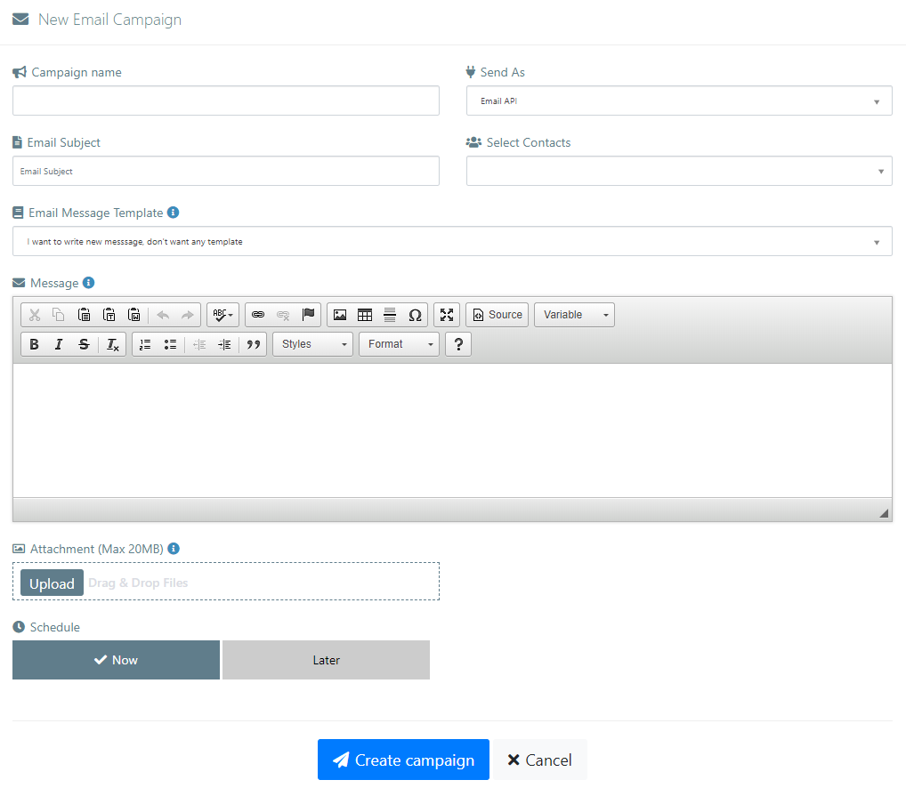
Campaign Name : You have give a campaign name.
Send As: You have to select a Email API to send Email. You will see the dropdown of your confugured Email APIs.
Message Template : You can choose your created Email message template from the dropdown. You will see the list of your added message templates from Email Template menu. Here you can also write your own message instead of using Message templates. You can use variables into your message by click on Variable button of the text editor like #FIRST_NAME#, #LAST_NAME#, #MOBILE#, #EMAIL_ADDRESS# which will be replaced by contacts first name,last name, mobile, email address repectively. You can also send unscubscribe link with the message from variable dropdown. It will show as #UNSUBSCRIBE_LINK# and system will send a link to the campaign contact email to unsubscribe from your mailing service.
Select Contacts : You have to select your contact group to send Email. You can select multiple groups. System will send email to your select groups contacts.
Attachemnt : You can send attachment with the email also. Allowed files are .png, .jpg,.jpeg, .docx, .txt, .pdf, .ppt, .zip, .avi, .mp4, .mkv, .wmv, .mp3
Schedule : If you want to send Email instant, you can keep it Now. Or if you want to create a scheduled campaign, you have to select Later. You will see the Time and Time Zone section which are required for Scheduled campaigns.
Edit Email Campaign : You can edit your campaigns by click on Edit Icon. Keep in mind that only Pending campaigns are editable.
See Email Campaign Report :
Click the "Report" button to see delivery status of your message. Report will display status of email delivery for each contact.
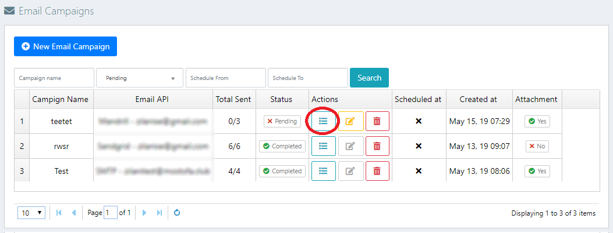
Here you can see the sending time and status response of each contact of the campaign. You can edit only your original Message from here. If the campaign has been completed without sending to all and you think you can proceed the campaign & there is less possibilty to get error response, you will see a button Resend from where it is left off to resume sending where it is left off before completion of campaign.
This Section Contains your entire Email campaign Sending history. You can see the actual delivery status of each contacts here. You can also search Email of a specific date interval.
SMS and Email Campaigns are operate with Cron Job. So you have set cron jobs on your server to make SMS/Email Campaign works.
To get your API Key and cron command Go to Native API & Cron Job menu and click on Generate API Key button. Copy the Scheduled/SMS Cron Job Command [once per minute or higher], Scheduled/Email Cron Job Command [once per minute or higher] & Scheduled/Birthday-wish SMS/Email Cron Job Command [once Per Day Or Higher] commands and configure it into your server.
Cron Job Tutorial : See the below video Tutorial to know how to set up cron job on your server.
SSEM now includes native API so that you can connect with your SSEM service from external source. As for example: suppose you have a site where there is a registration system and you want to add user data to SSEM database also or you want to send SMS/Email from that site. In that case you need our SSEM native API. The API manual is described in details under Native API & Cron Job menu of your SSEM application.
SSEM has 11 languages built-in support. It supports 11 different languages. You can set your application into your language by selecting application language from 11 language. Go to Settings -> General Settings menu, here you will find the language selection option.
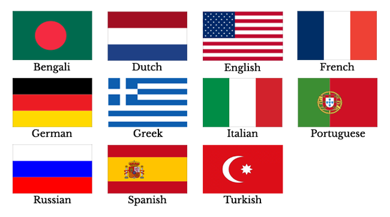
Disclaimer: We are glad to provide our product in 11 different languages. You can change your language system from General Settings. Users can also change their language in front-end and backend. All the translations are performed by google translator. Also there are possibilities of human error. If there are any errors then we can not take the responsibility because firstly, we have no control over or knowledge on google's translation algorithm and secondly, our first language is Bengali & second language is English. So we were unable to correct errors for other languages than Bengali or English. You can correct any error or change any word if you like to (described below).
Change Any Built-in Language's Words/Sentences:
If you want to change words/sentences any of our built-in languages, you will find them in three places. Let you want to change Bengali language, then you will find Bengali language files in:
1. ssem/application/language/bengali/
example: common_lang.php
$lang['Recent Activities'] = "Your Value 1"; $lang["Today's New Visitor Report"] = "Your Value 2";
2. ssem/plugins/grid/locale/bengali.js
example:
$.fn.pagination.defaults.beforePageText = 'Value 1';
$.fn.pagination.defaults.afterPageText = ' Value 2 {pages}';
$.fn.pagination.defaults.displayMsg = 'Value 3 {total} Value 4 {from} Value 5 {to} Value 6';
The files are php or js files. So, any syntax error during changing will affect the system. Please be careful when you change and backup original files before you change.
Add New Language
Suppose your language name is "my_lang"
Copy application/language/english folder and paste & rename folder to "my_lang". Then translate all files in that folder.
Translate coping plugins/grid/locale/english.js as plugins/grid/locale/my_lang.js
Translate coping plugins/grocery_crud/languages/english.php as plugins/grocery_crud/languages/my_lang.php
Then open application/controllers/home.php and add an array index in _language_list() function like below: